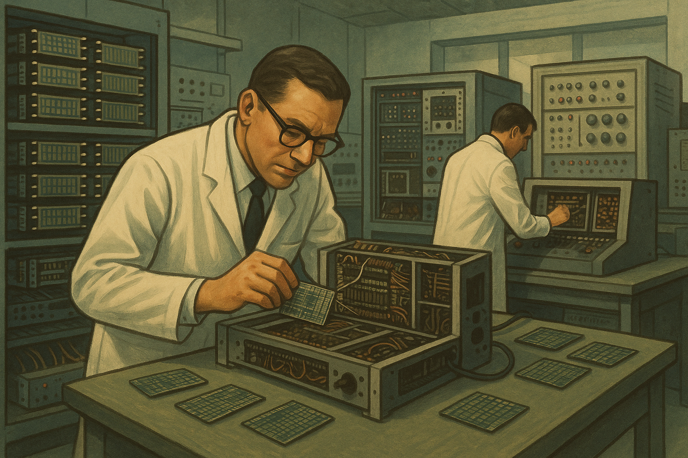
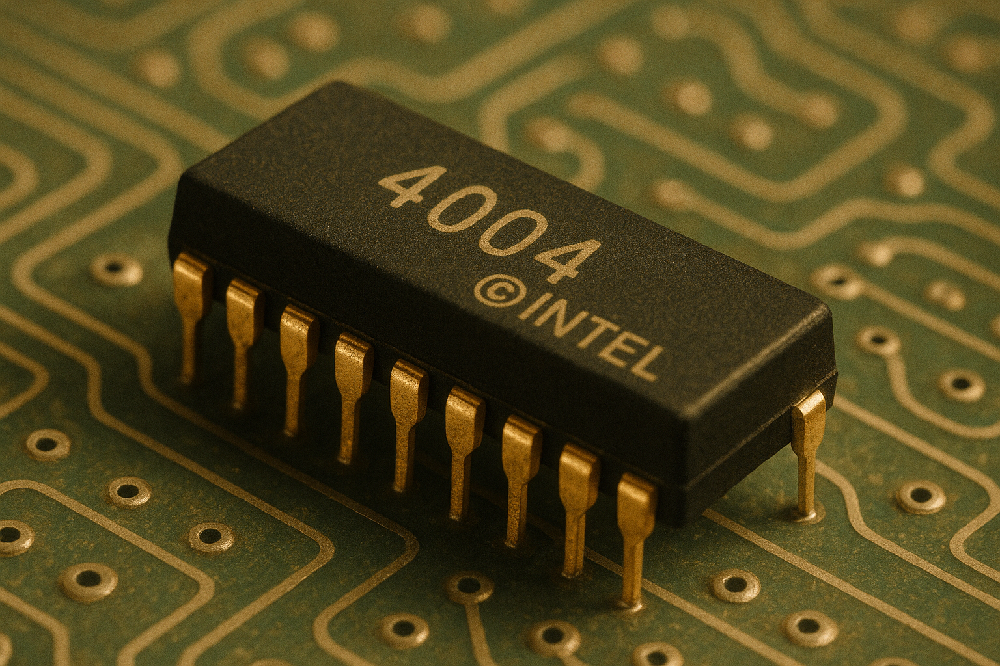
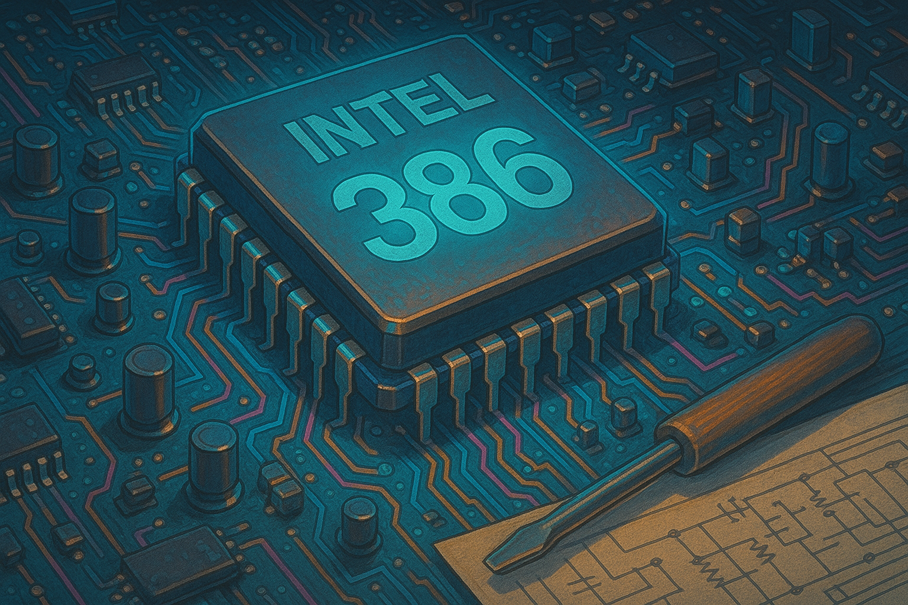
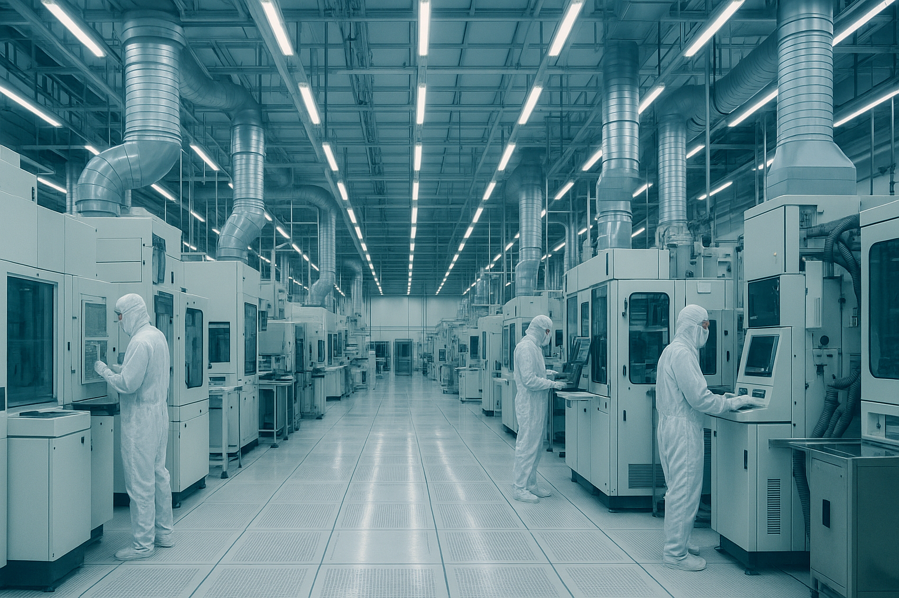
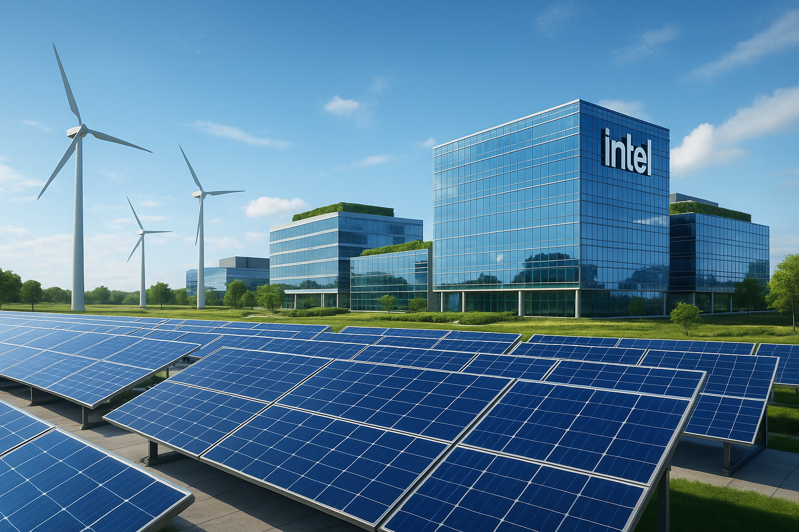
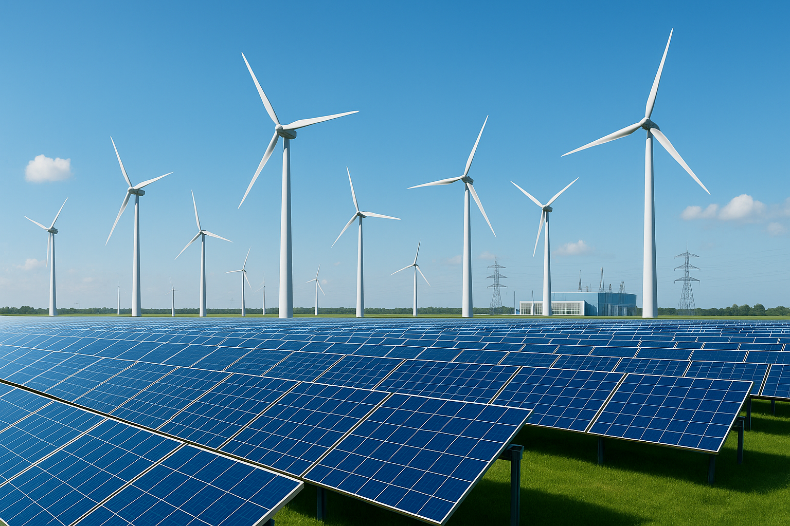
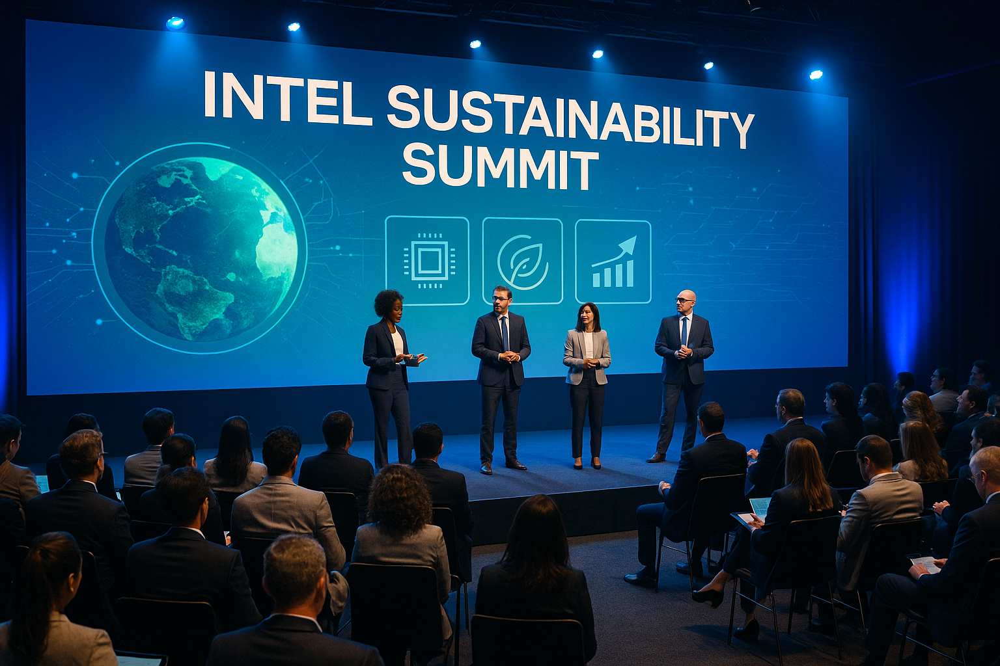

1968
Intel Founded

Robert Noyce and Gordon Moore rename NM Electronics to Intel Corporation.
Robert Noyce and Gordon Moore lay the foundation for decades of technological
innovation and, later, industry-leading sustainability programs.
1971
First Microprocessor

Intel debuts the 4004, the first commercial microprocessor.
The 4004 ignites the microprocessor revolution and propels the future of
computing devices.
1978
8086 Processor
Launch of the 8086 and the x86 architecture.
x86 becomes the backbone of PCs and servers for decades, enabling massive
software ecosystems and efficiency gains generation after generation.
1985
386 Processor

32-bit architecture ushers in new performance.
Intel introduces the 386 with 32-bit architecture—fueling multitasking and a
wave of software innovation for personal computers.
2006
Peak GHG Emissions

Highest annual operational GHG emissions recorded.
Intel accelerates investment in chemical abatement, renewable electricity,
and energy-efficient manufacturing to reverse the trend.
2020
RISE Strategy
Responsible, Inclusive, Sustainable, Enabling (RISE) strategy.
Intel launches its 2030 goals to drive climate action, water stewardship,
and waste reduction across the industry.
2022
Net-Zero by 2040

Commitment to net-zero Scope 1 & 2 GHG emissions by 2040.
Building on years of initiatives, Intel targets operational net-zero with
progress measured via renewable energy, efficiency, and abatement.
2023
Renewable Electricity

Intel reaches 99% renewable electricity worldwide.
Renewable sourcing drastically lowers operational emissions and advances
long-term sustainability goals.
2024
Sustainability Summit

First Intel Sustainability Summit convenes global partners.
Suppliers, governments, and industry leaders collaborate on next-gen
sustainable semiconductor manufacturing.